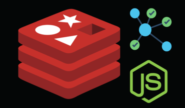
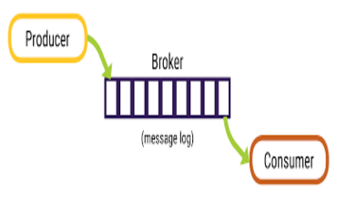

Transforming Ideas into Scalable Solutions
Hello! I’m Valeriano Filipe, a Backend Developer with over 3 years of hands-on experience in designing and building scalable server-side solutions using Node.js (TypeScript/JavaScript). My expertise includes optimizing performance, migrating monolithic architectures to microservices, and developing robust APIs. I also have foundational knowledge in C, Java, and am currently expanding my skills in Golang to stay ahead in the evolving tech landscape.
My expertise spans from migrating monolithic systems to modern microservices architectures, implementing secure authentication systems, to develop robust APIs. What sets me apart is my ability to combine technical precision with strong problem-solving skills, ensuring efficient and maintainable code. I thrive in collaborative environments, leveraging my adaptability, resilience, and communication skills to deliver high-impact results. Whether it’s debugging complex systems or streamlining workflows, I’m committed to continuous learning and innovation. I believe in continuous learning and improvement - "What I don't know, I learn. What I already know, I improve it day by day".
Core Skills/Technologies
- Node.js backend development
- Microservices architecture
- API development and integration (REST/GraphQL/WebSockets/gRPC)
- Database management (PostgreSQL/MySQL/Redis)
- Cloud services and containerization (AWS, Docker, Kubernetes)
- Message queue systems (Apache Kafka)
Professional Experience
Backend Developer - Freelance
Present
- Designed and deployed multiple backend services using Node.js, APIs, and microservices architecture
- Built bysKafka - Apache Kafka integration for inter-service communication
- Currently developing "notebys" - a cross-platform web/mobile app using Go and Node.js backend, React web, and React Native mobile
- Implemented AI-based daily word suggestions using LLM APIs
- Created RESTful APIs with secure user authentication and scalable backend services
Web Developer - Ludus Cristaltec
2023 - 2024 | Porto, Portugal
- Maintained and improved internal web-based time management system
- Successfully migrated monolithic Laravel 7 system to microservices architecture
- Implemented Node.js backend, Vue.js frontend, and AWS S3 CDN integration
- Delivered automated hour sheets and entry/exit records functionality
Featured Projects
I work as a freelance backend developer, applying my Node.js and Go skills to create efficient solutions across various projects. Here are some highlights from my open-source contributions:

Simple batch email triggering system built with Node.js and AWS SDK.
Technologies: Node.js, AWS SES, Redis, Message Queue
Goal: Demonstrate AWS SDK integration for email services and Redis as Message Queue

Producer and consumer applications for Apache Kafka message processing.
Technologies: Node.js, Apache Kafka, JSON messaging
Goal: Test Apache Kafka as Message Queue/Broker for microservices communication

GitHub user search application for discovering developer profiles and information.
Technologies: Node.js, REST API, GitHub API integration
Goal: Demonstrate REST API integration and data processing
Notebys
In Development
Notebys (In Development)
Cross-platform smart note-taking application with AI integration.
Technologies: Go, Node.js, React, React Native, LLM APIs
Goal: Build a comprehensive note-taking solution with AI-powered features
Ready to Start Your Next Project?
Let's discuss how I can help you build robust, scalable backend solutions that drive your business forward.

{kind=link}
{kind=link}